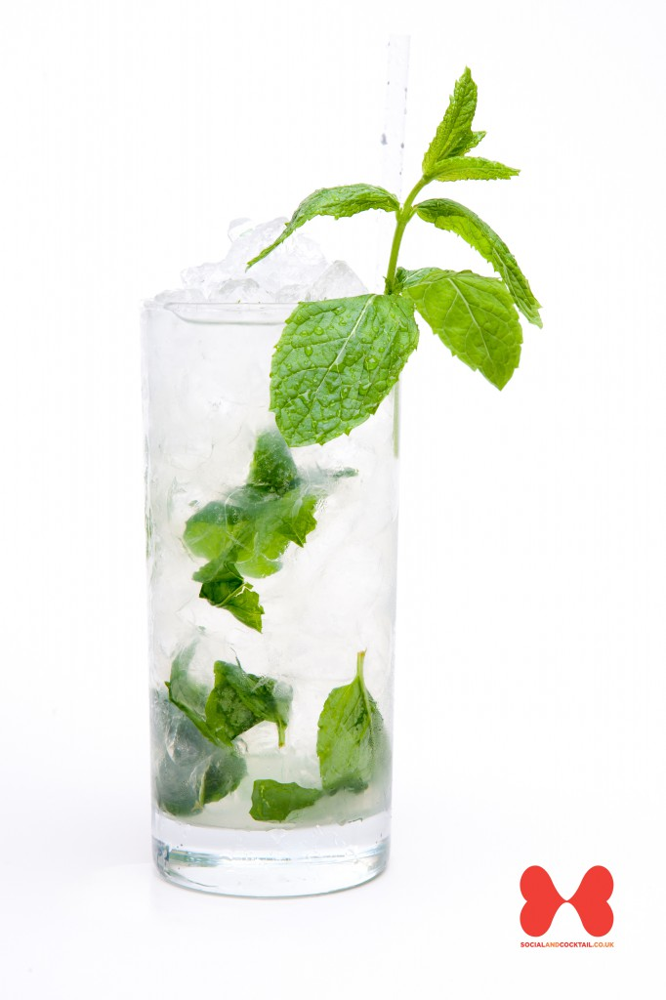
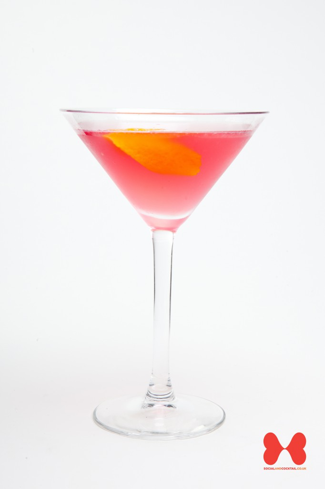
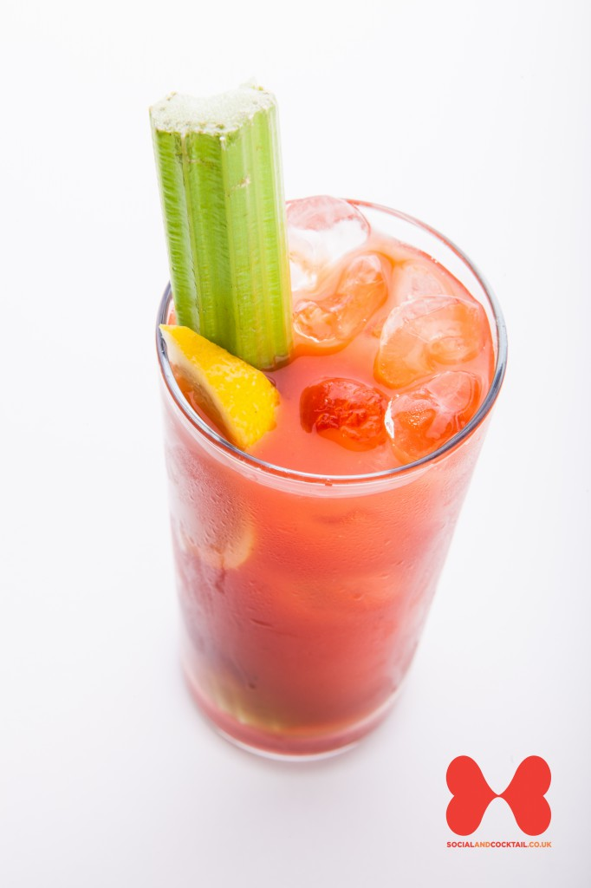

Mojito

Ingredients
| 50 ml | White Rum |
|---|
| 8-10 | Mint leaves |
|---|
| 12 1/2 ml | Sugar Syrup |
|---|
| 25 ml | Lime Juice |
|---|
| 2 | Mint sprigs |
|---|
How to make a Mojito
- Add the white rum to a highball glass.
- Add 8–10 mint leaves and sugar syrup and lime juice.
- Muddle with bar spoon.
- Add crushed ice and a splash of soda.
- Mix drink down with bar spoon. Taste.
- Top up with more crushed ice.
- Slap 2 mint sprigs to release essence and put into drink.
- Add small splash of soda and straw.
back to top
Cosmopolitan

Ingredients
| 37 1/2 ml | Citrus Vodka |
|---|
| 12 1/2 ml | Triple Sec |
|---|
| 30 ml | Cranberry Juice |
|---|
| 1/2 | squeezed lemon |
|---|
| 12 1/2 ml | Sugar Syrup |
|---|
How to make a Cosmopolitan
- Chill coupe glass with soda water.
- Add all ingredients to mixing tin with ice.
- Shake for 10 to 15 seconds.
- Fine strain into the chilled coupe glass.
- Flame an orange peel and place in drink as garnish.
back to top
Bloody Mary

Ingredients
| 37 1/2 ml | Peppered Vodka |
|---|
| 15 ml | Sweet Vermouth |
|---|
| 35 ml | Tomato Juice, splash Red Wine |
|---|
| 6 splashes | Worcestershire sauce |
|---|
| 10 dashes | Tobasco sauce |
|---|
| 25 ml | Lemon Juice |
|---|
| 10 dashes | Salt |
|---|
| 10 dashes | Pepper |
|---|
| 3 | Cucumber slices |
|---|
How to make a Bloody Mary
- Chill a highball glass with ice.
- Pour all the ingredients, apart from red wine, into mixing tin and add ice.
- Roll the mixing tin for 15 seconds. Taste.
- Add ice to glass and single strain the drink into a glass.
- Add a splash of red wine and a dash of pepper.
- Garnish with 3 cucumber slices.
back to top